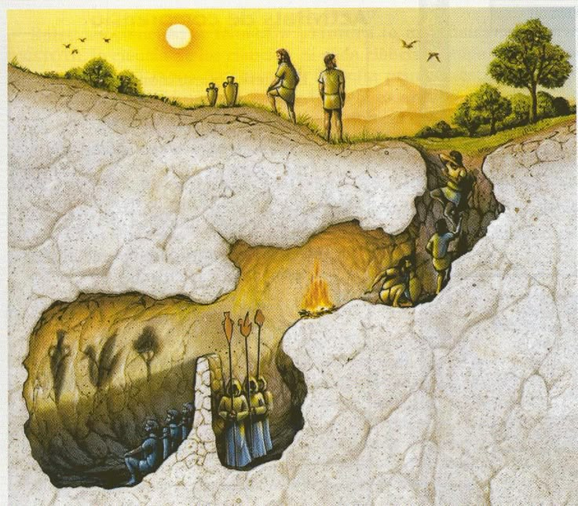
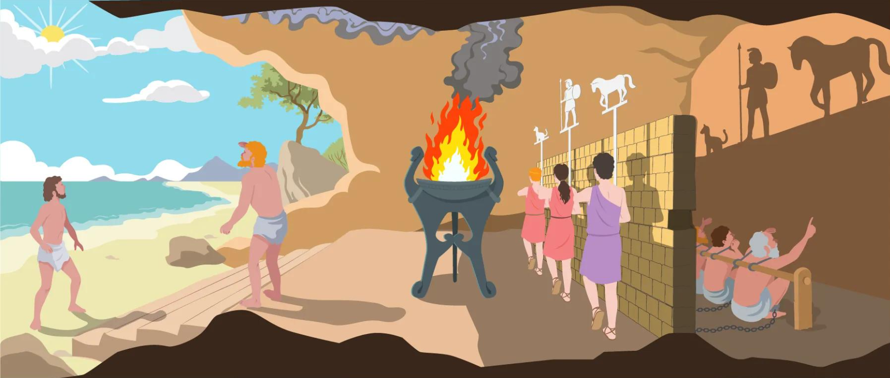

What Is Plato's Allegory of the Cave?

Plato's Allegory of the Cave is a philosophical story about the difference between appearance and reality, the limits of human knowledge, and the difficult process of discovering truth. It describes prisoners who have spent their entire lives chained inside a cave, watching shadows projected onto a wall and accepting them as the whole of reality. When one prisoner is freed and gradually discovers the world outside, he begins to understand how little he knew about the world he had always believed to be real. Through this image, Plato explores how people form their beliefs, why ignorance can feel like knowledge, and why genuine understanding often requires questioning what has always been taken for granted.[1]
The story appears in Book VII of Plato's Republic, where Socrates describes the prisoners to Glaucon as part of a wider discussion about education, knowledge, and the nature of philosophical understanding. The journey out of the cave is not simply a movement from darkness into physical light. It represents the soul's gradual movement away from opinions based on appearances towards knowledge of what is genuinely real. At the highest point of this journey stands the Form of the Good, which Plato presents as the ultimate source of intelligibility and knowledge, much as the sun makes sight and visible things possible in the physical world.[1]
What makes the allegory particularly striking is that freedom does not immediately bring comfort or understanding. The prisoner initially struggles to look at the objects that produced the shadows. When taken outside, the sunlight overwhelms his eyes, and he needs time before he can recognise the things around him. His difficulty suggests that abandoning familiar beliefs is rarely an effortless experience. People may resist unfamiliar truths, not necessarily because those truths are impossible to understand, but because their existing picture of the world has shaped everything they know.
Calling the passage an "allegory" is now customary, although Plato introduces it as an image or likeness.[a] It is often interpreted as a general warning against ignorance, but its philosophical purpose is more specific. The cave belongs to a connected series of images in the Republic, following the Analogy of the Sun and the Divided Line. Together, these images explain the distinction between opinion and knowledge, the relationship between education and truth, and the importance of the Form of the Good. The allegory also raises a political question: what responsibility do those who acquire philosophical understanding have towards the society from which they came?[2]
Who Created the Allegory of the Cave?
The Allegory of the Cave was written by the ancient Greek philosopher Plato, who lived approximately 427–347 BCE. It forms part of his dialogue Republic, one of the most influential works in Western philosophy.Plato presents the story through the character of Socrates, who explains the cave to another participant in the dialogue, Glaucon. This distinction matters because Plato wrote philosophical dialogues rather than straightforward treatises in which he simply stated his own conclusions.
Socrates was a real historical philosopher who lived in Athens and became known for questioning people's assumptions about subjects such as justice, virtue, and knowledge. However, he left no surviving writings of his own. Much of what is known about his philosophical activity comes from the accounts of other writers, particularly Plato and Xenophon. Plato frequently used Socrates as the central speaker in his dialogues, allowing philosophical arguments to develop through questioning and conversation.
It is therefore more accurate to say that Plato created the Allegory of the Cave and presented it through his literary portrayal of Socrates. We cannot treat the passage as a direct record of something the historical Socrates actually said. Nor should every statement made by the dramatic Socrates automatically be taken as a simple expression of Plato's personal views. The dialogue invites readers to examine the arguments and their connections rather than treating the speaker's identity as proof of their meaning.[1]
Where Does the Allegory Appear in Plato's Republic?
The Allegory of the Cave appears in Book VII of Plato's Republic, beginning at Stephanus page 514a and continuing through approximately 521b. Stephanus numbers are the standard reference system used by scholars to locate passages in Plato's works. They remain consistent across different translations and editions, making them more reliable for academic citation than ordinary page numbers, which vary from one publication to another.[1]
The immediate philosophical background begins in Book VI. There, Socrates introduces the Analogy of the Sun and the Divided Line to explain the relationship between knowledge, understanding, and the objects of thought. The Sun represents the Form of the Good in the visible realm, while the Divided Line distinguishes different levels of cognition, ranging from imagination and belief to mathematical reasoning and philosophical understanding. The cave continues this discussion by presenting these abstract distinctions as a journey that can be imagined and followed.
The cave narrative itself occupies approximately 514a–517a. Socrates first describes the prisoners, their chains, the shadows on the wall, and the objects carried behind them. He then follows the experience of a prisoner who is released, forced to turn around, and eventually brought outside into the sunlight. From around 517a onwards, Socrates begins interpreting the image, connecting the cave with the visible world and the world of understanding. The discussion then moves towards the education of philosophers and their obligation to return to the political life of the city.
This placement is important because the allegory is not an isolated story about an individual discovering truth. It is part of Plato's larger argument about what makes a just society possible and why its rulers must possess knowledge of the Good. Reading the cave without its surrounding discussion can therefore leave out much of its political and educational significance.[2]
Symbols and Meanings in Plato's Allegory of the Cave
Plato's Allegory of the Cave uses a series of images to describe the difference between the visible world and the intelligible realm, as well as the difficult movement from appearance toward knowledge. Some of these meanings are explained directly by Socrates in the dialogue, while others are interpretations commonly drawn from the imagery of the allegory.
| Image in the Cave | What It Stands For | Source of the Reading |
|---|---|---|
| The cave or prison dwelling | The world we see with our eyes, the region revealed through sight | Stated by Socrates (517b) |
| The fire inside the cave | The sun, which lights the visible world | Stated by Socrates (517b) |
| The climb out and seeing things above | The soul's ascent to the intelligible realm, what is grasped by thought rather than sight | Stated by Socrates (517b) |
| The sun outside, seen last and with difficulty | The Form of the Good, the cause of all that is right and beautiful | Stated by Socrates (517b to 517c) |
| Turning the prisoner round | Education as turning the whole soul from becoming toward being | Stated by Socrates (518c to 518d) |
| The shadows and the puppet objects | Images of images: opinions shaped by others, a step removed from the things themselves | Common reading, prompted by the text |
| The prisoners' shadow-watching prizes | Honours for skill in a world of appearances, such as political or rhetorical cleverness | Common reading, prompted by the text |
| The prisoners who would kill the liberator | A clear echo of the trial and death of Socrates | Inference: the text does not name him |
Inside Plato's Cave: The Prisoners and Their World
Plato begins the allegory by asking us to imagine human beings who have lived their entire lives inside an underground cave. They are chained in such a way that they cannot turn their heads and can look only at the wall in front of them. Behind them, a fire provides light, while other people move objects along a raised passage, casting shadows onto the wall. For the prisoners, these moving shadows are the only things they have ever known. They have no experience of the objects producing them or of the world beyond the cave. What appears on the wall therefore becomes their entire understanding of reality.[1]
This setting is more than a description of an unusual underground prison. Plato carefully constructs an environment in which the prisoners' understanding is limited by what they are able to see and hear. They have no opportunity to compare their experiences with anything outside the cave, so they have no reason to question whether the shadows represent something greater. Before exploring the prisoner's escape, it is worth understanding how Plato arranges this world and why its individual features matter.
The Prisoners and Their Chains
The prisoners have been confined since childhood. Their legs and necks are bound, preventing them from moving freely or turning around to see what lies behind them. They cannot look at one another directly either; their attention is fixed entirely on the wall before them. Since this is the only condition of life they have experienced, the prisoners have no memory of a different way of seeing the world.
Their chains represent the limitations that prevent them from recognising anything beyond their immediate experience. These limitations are not necessarily physical in the wider philosophical meaning of the allegory. They can also be understood in terms of unquestioned beliefs, inherited assumptions, and an inability or unwillingness to examine what one takes for granted. The important point is that the prisoners do not know they are missing something. Their confinement has become so familiar that they mistake it for the natural condition of human existence.
The Cave and the World Around Them
Plato describes the cave as an underground dwelling with an opening that allows some light to enter. Behind the prisoners is a fire, and between the fire and their position runs a raised passage. Along this passage stands a low wall, similar to the screen used by performers when displaying figures above it. People walk behind this wall carrying various objects, allowing their shapes to appear as shadows on the surface the prisoners face.
The arrangement is important because it establishes two different positions within the same cave. The prisoners see only the shadows, while the people behind them handle the objects that produce those shadows. The prisoners therefore experience the effects without knowing their causes. Plato uses this physical separation to introduce a central problem of knowledge: what we perceive may not provide a complete account of what actually exists. Something can appear convincing while concealing the conditions that produced it.
The Fire Behind the Prisoners

The fire provides the light that makes the shadows visible. Without it, the prisoners would not be able to see the moving shapes on the wall. Yet the fire does not reveal the world as it truly is; it merely illuminates the objects carried along the passage and allows their outlines to appear before the prisoners. Its light is therefore limited to the enclosed environment of the cave.
Plato's description also prepares the reader for an important distinction later in the allegory. The fire inside the cave should not be confused with the sun outside it. The sun belongs to the world beyond the cave and becomes central to Socrates' explanation of the highest stage of understanding. The difference between these two sources of light helps establish that not all illumination provides the same level of knowledge.
The Objects Passing Behind Them
Behind the prisoners, people move along the raised passage carrying objects made from materials such as wood and stone. Plato mentions figures representing humans, animals, and other things. Some of these objects rise above the low wall, allowing their shapes to be projected onto the cave wall by the fire. The prisoners never see the objects themselves; they see only the shadows created by their movement.
This detail is particularly important because it introduces the difference between an object and its appearance. The figures carried behind the wall have a physical existence within the cave, but the prisoners have no direct access to them. Their knowledge is limited to the outlines produced by the fire. Plato is therefore showing how a person can form beliefs about things without understanding what those things actually are or how they come to appear as they do.
The Shadows on the Wall
The shadows are the only visible objects in the prisoners' world. They watch shapes moving across the wall, recognise familiar patterns, and may even give names to the things they believe they are seeing. Because they have never encountered the objects responsible for these appearances, they have no reason to distinguish between the shadows and the things themselves. For them, the shadows are not representations of reality; they are reality.
This is one of the most important ideas in the allegory. Plato is not simply describing people who are too foolish to recognise the truth. The prisoners' beliefs are shaped by the limited evidence available to them. They interpret their surroundings according to what they have experienced, without realising that their experience leaves out almost everything that exists beyond their immediate view. The shadows therefore represent a condition in which appearances are mistaken for complete knowledge.
The Voices and the Shadows
Plato adds another detail to the scene: the sounds made by the people carrying objects behind the wall. When someone speaks, the prisoners hear an echo from the cave wall. Since they cannot see the speaker, they would naturally associate the voice with the shadow passing before them. In their experience, the shadow itself appears to be producing the sound.
This detail makes the prisoners' world more convincing because their understanding is formed through both sight and hearing. They do not merely recognise shapes; they associate those shapes with sounds and names, building a familiar system for interpreting what happens around them. Yet the connections they make are based on incomplete information. Plato uses this to show how an entire understanding of the world can develop within limited conditions and still feel perfectly reasonable to the people living inside them.
When One Prisoner Is Freed
After describing the prisoners and their limited world, Plato introduces a change that sets the rest of the allegory in motion. One of them is released from his chains and made to turn towards the objects and fire behind him. For the first time, he is forced to confront something beyond the shadows he has always regarded as reality. However, the experience does not immediately bring understanding. Instead, it produces confusion, discomfort, and resistance. What he once considered familiar and clear suddenly becomes difficult to recognise, while the things that are supposed to be more real seem strange and unfamiliar.[1]
The Prisoner Is Released
Plato describes the prisoner being unchained and compelled to stand, turn his neck, walk, and look towards the fire. These movements, which would normally seem ordinary, become difficult because his body has been accustomed to one fixed position throughout his life. He is now being asked to use his senses in a way he has never experienced before.
When he turns around, he sees the objects that had previously appeared only as shadows on the wall. Yet he cannot immediately recognise them. The familiar shapes that once seemed perfectly understandable have been replaced by objects that appear unfamiliar and difficult to comprehend. If someone tells him that these objects are more real than the shadows, he may struggle to accept the explanation. His difficulty is not simply a failure to see; it is a failure to adjust his understanding to what he is seeing.
His First Encounter with the Fire
The firelight makes the experience even more uncomfortable. Having spent his entire life looking at dim shadows, the prisoner finds the brighter light painful to his eyes. He cannot examine the objects clearly and may even turn back towards the wall, where the shadows appear easier to recognise. In his present condition, the things he once considered real seem more understandable than the objects now placed before him.
Plato uses this reaction to show that people do not necessarily welcome a truth simply because it is presented to them. The prisoner has spent years developing his understanding of the world around the shadows. Accepting that his former beliefs were incomplete would mean questioning the foundation of everything he thought he knew. His resistance therefore comes from the difficulty of changing an established understanding, not merely from the physical discomfort of looking at the fire.[1]
Seeing the Objects Behind the Wall
As his eyes gradually adjust, the prisoner begins to recognise the objects carried behind the wall. He can now distinguish the figures themselves from the shadows they previously produced. What once appeared to be independent things on the wall can now be understood as images created by something else. This is an important change because he is no longer simply observing different shapes; he is beginning to understand the relationship between an appearance and its cause.
His discovery also changes how he interprets his earlier experiences. The shadows have not suddenly disappeared or become imaginary. He now understands that they were incomplete representations of objects that existed beyond his view. For Plato, this marks an early movement towards a more adequate understanding of reality: learning to look beyond what appears and examine what makes that appearance possible.
The Pain of Seeing Something New
The prisoner's discomfort is an important part of the story rather than an obstacle that Plato mentions in passing. Becoming aware of a wider reality requires him to abandon familiar ways of seeing and judging things. Even when the new objects are more informative than the shadows, he is not immediately prepared to understand them. His eyes and his thinking both need time to adjust.
This is closely connected to Plato's understanding of education. Genuine learning is not always a comfortable process in which new information simply adds to what someone already knows. It can require a person to reconsider earlier assumptions and recognise the limitations of their previous understanding. The prisoner's first experience of freedom therefore introduces the central movement of the allegory: education as a gradual turning of the soul towards knowledge.
The Prisoner's Journey Out of the Cave
After the prisoner has been turned towards the fire and the objects behind him, Plato takes the story further. He describes the prisoner being dragged up a rough and difficult path towards the opening of the cave. This journey represents more than a change of location. It is a gradual movement towards a reality that is increasingly difficult to comprehend using the standards by which the prisoner once understood his surroundings. Each stage prepares him for the next, allowing his sight and understanding to adjust before he encounters the full brightness of the outside world.[1]
From the Cave Towards the Outside World
Plato describes the passage leading out of the cave as steep and difficult. The prisoner is not simply invited to leave; he is dragged upwards, even though the experience causes him pain and resistance. The stronger light outside makes it difficult for him to see, and he initially struggles to recognise anything around him. The journey is therefore presented as something that requires effort and, at least initially, happens against his wishes.
This detail carries philosophical significance. The movement towards knowledge is not necessarily something people find pleasant or immediately desirable. Leaving familiar beliefs behind can be difficult, especially when those beliefs have shaped one's entire understanding of life. Plato's description of the ascent suggests that education requires more than receiving information. It involves a transformation in how the mind approaches what is real, and that transformation may take considerable effort.
Seeing Reflections and Shadows
Once outside, the prisoner cannot immediately look at the objects around him. The brightness of daylight is too overwhelming, so he first finds it easier to look at shadows and reflections in water. These are familiar forms of indirect vision, but they now belong to a much wider world than the one he knew inside the cave. Gradually, he becomes capable of recognising more of what surrounds him.
Plato deliberately places these experiences at the beginning of the prisoner's adjustment to the outside world. He does not move from the darkness of the cave straight to a complete understanding of everything around him. His sight develops through stages, and each stage makes the next one possible. The sequence illustrates that understanding often grows gradually, rather than arriving as a single moment of complete discovery.
Seeing Things Directly
After becoming accustomed to shadows and reflections, the prisoner can begin looking at the objects themselves. He can see the people, animals, and other things that exist in the world outside the cave. What was previously available only through indirect images can now be encountered directly through sight.
This stage represents a further improvement in his understanding. He is no longer limited to images or reflections but can recognise the things responsible for them. The movement recalls the distinctions Plato develops in the Divided Line in Book VI of the Republic, where different kinds of objects correspond to different levels of understanding. The visual sequence in the cave gives a narrative form to the broader philosophical distinction between images and the things they represent.[2]
Looking at the Night Sky
The prisoner's education continues beyond the objects he can see during the day. Plato describes him looking towards the heavens at night, observing the moon, stars, and the wider arrangement of the sky. These are easier for him to contemplate than the sun in its full brightness. His ability to look at them marks another stage in his growing capacity to understand the world outside the cave.
This part of the story also shows that the prisoner's adjustment is not limited to recognising individual objects. He is beginning to encounter a larger order beyond the immediate surroundings that once defined his existence. The world is no longer a collection of isolated appearances on a wall; it is a wider reality with relationships and patterns that he can gradually learn to understand.
Finally Seeing the Sun
Eventually, the prisoner becomes capable of looking at the sun itself. He no longer needs to examine it through reflections or indirect images. He can observe it directly and recognise its importance in the world around him. Plato explains that the prisoner begins to understand that the sun governs the seasons and years, and that it is connected with the order of the visible world. This is the highest point of his journey out of the cave.[1]
The sun is not simply the brightest object the prisoner has encountered. Its importance comes from what it makes possible. It provides light through which visible things can be seen and is connected with the conditions that sustain life in the world outside. The prisoner has moved from seeing shadows to recognising their causes, then to understanding a much wider reality and the source of its illumination.
What the Sun Represents
The sun has a deeper philosophical meaning in Plato's allegory. Socrates explicitly connects it with the Form of the Good, which he had discussed earlier through the Analogy of the Sun in Book VI of the Republic. Just as the physical sun makes sight possible and allows visible things to be seen, the Good makes knowledge and truth possible in the intelligible realm. It is not merely another object among the things that can be understood; it is the ultimate source of their intelligibility.[2]
This connection is central to understanding why the prisoner must reach the sun rather than simply discover the objects outside the cave. Plato is concerned with more than gaining information about the world. He is interested in understanding the deeper principles that make knowledge possible and give reality its intelligible order. The Form of the Good occupies the highest position in this philosophical account, which is why the prisoner's encounter with the sun represents the culmination of his ascent.
The Prisoner's Realization
By the time the prisoner reaches the outside world and becomes capable of looking at the sun, his understanding has changed considerably. He now knows that the shadows he once regarded as the whole of reality were only representations of objects that existed beyond his view. More importantly, he has experienced the process through which his earlier understanding was challenged and gradually replaced by a wider one. The cave has not vanished from his memory, but it no longer appears to him in the same way.
From Appearance to Reality
Before his release, the prisoner had no reason to distinguish between the shadows and the objects that produced them. Everything he knew came from what appeared on the wall. After his journey, however, he can recognise that appearances do not always reveal the complete nature of the things they represent. He understands that the shadows depended on objects, the objects were illuminated by fire, and the outside world offered a much wider reality than anything he had previously encountered.
This change does not mean that everything perceived through the senses is simply false. Rather, Plato is concerned with the limitations of relying on appearances as though they provide complete knowledge. What seems obvious at one level of understanding may turn out to be only a partial account when examined more carefully. The prisoner's experience therefore illustrates the importance of moving beyond immediate appearances towards a deeper understanding of what things are and why they appear as they do.
From Opinion to Knowledge
The prisoner's journey can also be understood through Plato's distinction between doxa, meaning opinion or belief, and epistēmē, meaning knowledge. Before his release, the prisoner's understanding is based entirely on the appearances available to him. He forms judgments about the shadows without knowing the objects or conditions responsible for them. His beliefs may appear certain, but they are founded on an incomplete view of reality.
His ascent represents movement towards a more reliable kind of understanding. He gradually becomes capable of recognising objects, examining their relationships, and eventually contemplating the Form of the Good. However, Plato's distinction between opinion and knowledge is more developed than a simple division between being mistaken and being correct. In the Divided Line, he identifies different levels of cognition and relates them to different kinds of objects, from images and visible things to mathematical reasoning and philosophical understanding. The cave narrative gives this progression a concrete form through the prisoner's changing experience.[3]
Understanding the World He Once Knew
One of the most important changes in the prisoner's understanding is that he can now explain the world he previously inhabited. He knows where the shadows came from, what produced them, and why the prisoners were unable to see anything beyond them. What once appeared to be an independent and complete world can now be understood as a limited arrangement of objects, light, and appearances.
This is more significant than simply replacing one set of beliefs with another. The prisoner has gained the ability to understand the relationship between different levels of experience. He can recognise why the shadows appeared convincing to those who remain inside while also understanding why their interpretation is incomplete. His earlier experiences have not become meaningless; they have acquired a different place within a much broader understanding of reality.
Why the Prisoner Remembers the Cave
Despite everything he has discovered, the prisoner does not forget the people he left behind. He remembers their condition, the shadows they continue to watch, and the importance they give to those who can identify and predict the movements of the shadows most accurately. Within the cave, such abilities may bring recognition and honour because they are treated as signs of superior understanding.
From his new position, however, the prisoner sees these honours differently. He would feel pity for his former companions rather than envy those who receive recognition for their skill within the cave. What once appeared valuable now seems limited when compared with the understanding he has gained. Plato uses this contrast to show how a change in knowledge can also change a person's judgment about what deserves admiration and respect.
Yet the prisoner's memories raise an important question that leads directly to the next part of the allegory: what should someone do after discovering a reality that others have never seen? Should he remain outside, enjoying his new understanding, or return to those who are still confined? Plato does not leave this question unanswered. The philosopher's return to the cave becomes one of the most important parts of his argument about knowledge, education, and responsibility towards society.
The Philosopher Returns to the Cave
The prisoner's journey does not end when he discovers the world outside. After reaching a greater understanding of reality and contemplating the sun, he must face another difficult task: returning to the cave. This is where Plato gives the allegory much of its political significance. The person who has acquired knowledge is not supposed to remain permanently separated from the people who have not. His understanding creates a responsibility towards the society from which he came. Plato uses this return to explore a difficult question: should those who understand the nature of justice and the Good withdraw from public life, or should they accept the responsibility of helping to govern others?[1]
Why Does the Prisoner Return?
In Plato's account, the philosopher returns because the purpose of education is not simply to make one individual wiser or happier. It is also connected with the well-being of the entire city. Earlier in the Republic, Socrates argues that those who are best suited to govern are people who have undergone a demanding education and have developed an understanding of justice and the Form of the Good. Once they have reached this understanding, they must take their turn in governing rather than remain occupied exclusively with philosophical contemplation.
This expectation may seem unusual because someone who has discovered a deeper reality might naturally prefer to remain in the world of knowledge rather than return to a place associated with ignorance. Plato, however, does not regard governing as a reward for personal achievement. Those who understand the Good have a responsibility to use their knowledge for the benefit of the city. The return therefore represents the connection between philosophical wisdom and public duty. A philosopher's education is incomplete, in political terms, if it never leads to service within the community.[1]
Returning to the Darkness
When the freed prisoner returns to the cave, his eyes are once again poorly adapted to the surroundings. After becoming accustomed to daylight, he struggles to distinguish the shadows in the darkness. The situation reverses his original experience: earlier, he found it difficult to look at the fire and objects behind him because his eyes were accustomed to darkness. Now, having experienced the brighter world outside, he cannot immediately see clearly in the cave.
This temporary difficulty is significant because it shows that the prisoner's new understanding does not automatically make him more capable in every environment. He needs time to adjust, just as he did during his ascent. However, the other prisoners do not know what he has experienced. They see only someone who has returned with apparently impaired vision, and they have no reason, within their limited understanding, to recognise the difference between temporary difficulty and a greater knowledge of reality.
Why the Other Prisoners Laugh at Him
The prisoners laugh at the returning man because they believe his journey outside has damaged his ability to see. They compare his performance with their own ability to recognise and predict the shadows, and he appears less capable than before. From their point of view, leaving the cave has brought him no advantage. Instead, it seems to have made him worse at the very activity they consider important.
Plato uses this reaction to highlight the difficulty of communicating knowledge to people who have never encountered the reality being described. The returning prisoner knows that the shadows are not the whole of existence, but he cannot easily demonstrate this to those who have never seen anything beyond them. His explanation may sound unbelievable because it challenges the only evidence his companions have ever trusted. The scene illustrates how a person's understanding can be judged by standards that are themselves limited by ignorance.
Why the Prisoners Resist His Explanation
The prisoners' response becomes even more serious when Socrates considers what might happen if someone attempted to release them and lead them towards the outside world. He suggests that if they could get hold of such a person, they might kill him. This is one of the darkest moments in the allegory. The prisoners are not merely unwilling to accept a different explanation; they may become hostile towards the person who threatens the beliefs around which their entire world is organised.[1]
Their hostility can be understood through the relationship between knowledge and established belief. The prisoner who returns challenges the assumptions that make the cave intelligible to its inhabitants. Accepting his account would require them to question their understanding of reality, their judgments, and even the value they place on the skills that bring them recognition. Plato therefore presents ignorance as something that can be defended rather than simply endured. People may resist a challenge to their beliefs when those beliefs are deeply connected to their identity and way of life.
The passage also recalls the fate of Socrates, who was tried and sentenced to death in Athens in 399 BCE. The comparison is difficult to overlook, given that Plato wrote about the execution of his teacher and repeatedly explored the tension between philosophical questioning and public opinion. Although the allegory does not explicitly identify the returning prisoner with Socrates, the parallel gives the scene an additional historical and philosophical resonance.
Would the Prisoners Follow Him?
Plato does not describe the prisoners eventually accepting the returning man's explanation or following him out of the cave. Instead, the story ends by emphasising the danger he faces if he attempts to free them. This is important because the allegory is not a simple story in which one person discovers the truth and successfully convinces everyone else to accept it.
The difficulty of educating others becomes part of Plato's wider political argument. Knowledge cannot always be communicated through explanation alone, particularly when the listener has not developed the intellectual capacity or experience needed to understand it. The philosopher must therefore confront a society that may distrust the very knowledge that could help it. Plato's concern is not merely whether people can discover the truth, but whether a city can recognise and accept those who are genuinely equipped to guide it.
What Does Plato's Allegory of the Cave Mean?
At its centre, Plato's Allegory of the Cave examines how human beings understand reality and how easily appearances can be mistaken for complete knowledge. The prisoners believe that the shadows are real because those shadows are the only things they have ever experienced. Their situation changes only when one of them is forced to encounter the objects behind the shadows and eventually the world outside the cave. Through this journey, Plato illustrates the difference between relying on appearances and developing an understanding of what lies beyond them.
Socrates provides an interpretation of the image immediately after telling the story. He connects the cave with the visible realm and the ascent towards the outside with the movement of the soul towards the intelligible realm. This explanation provides the foundation for understanding the symbols, although the allegory should not be reduced to a rigid code in which every detail has only one possible meaning. Its central concern is the relationship between reality, knowledge, education, and the Form of the Good.[1]
The Cave and the World of Appearance
In Socrates' explanation, the cave represents the visible realm: the world of things that human beings encounter through their senses. Within the allegory, the prisoners experience only a restricted part of this realm, seeing shadows rather than the objects that produce them. Their understanding is therefore limited not because nothing exists beyond their experience, but because they have access to only a small part of what exists.
The outside world represents the intelligible realm, which is approached through reason and philosophical understanding rather than ordinary sense perception alone. Plato distinguishes between things that change and are encountered through the senses and the more stable objects of philosophical knowledge. The distinction is developed throughout the Republic, particularly through the Divided Line and the discussion of the Forms. The cave gives this abstract distinction a visual form, showing why moving beyond appearances is necessary for a deeper understanding of reality.
The Shadows and Opinion
The shadows represent the most limited level of the prisoners' experience. They see images without knowing what produces them, yet they treat those images as though they provide a complete picture of reality. Their judgments are formed from appearances that they cannot independently examine or compare with the objects behind them.
This condition is connected with Plato's concept of doxa, commonly translated as opinion or belief. In the Republic, opinion is distinguished from knowledge because it concerns the changing visible world rather than the stable objects of intelligible understanding. It is important, however, not to use the word as a simple insult. Plato is making a philosophical distinction between different ways of understanding and the objects towards which those ways of understanding are directed. The prisoners' opinions are limited because their experience is limited, not simply because they are unintelligent.
The Prisoners and Human Ignorance
The prisoners represent human beings living with an incomplete understanding of reality. Their ignorance is particularly difficult to overcome because they are unaware of its existence. They do not recognise that their experience is restricted, since everything they have ever known appears to confirm the world they believe in. In this sense, their condition is more complicated than simply lacking information. They have developed an entire way of interpreting reality within the limits of their environment.
Plato's description also suggests that ignorance can become comfortable and familiar. The prisoners have learned to identify the shadows, understand their patterns, and give importance to those who are particularly skilled at predicting them. Their world has its own standards of recognition and success, even though those standards are based on an incomplete understanding of what exists. The allegory therefore asks readers to consider whether confidence in one's beliefs is always justified, especially when those beliefs have never been seriously examined.
The Journey Out as Philosophical Education
The prisoner's ascent represents the process of philosophical education. It is not an instant transfer from ignorance to complete knowledge, but a gradual turning of the soul towards what is more real and intelligible. At first, the prisoner struggles to look at the objects behind him. Later, he becomes accustomed to reflections, visible objects, the night sky, and finally the sun. Each stage prepares him for a deeper level of understanding.
This progression reflects an important idea in Plato's philosophy: education does not simply put knowledge into a mind that possesses no capacity for understanding. In Book VII, Socrates explains that the power to learn is already present in the soul, but it must be directed towards the right objects. The task of education is therefore to turn the soul away from appearances and towards knowledge. The emphasis is on transforming the way a person thinks, not merely increasing the amount of information they possess.[1]
The Sun and the Form of the Good
The sun represents the Form of the Good, the highest principle in Plato's account of knowledge and reality. Socrates develops this comparison through the Analogy of the Sun in Book VI. In the visible world, the sun provides the light through which objects can be seen and is connected with their growth and existence. In the intelligible realm, the Good makes knowledge and truth possible and gives intelligible things their value and significance.
Plato gives the Good an exceptionally important position. Socrates describes it as being beyond being in dignity and power, suggesting that it cannot be treated as just another object of knowledge. Yet Plato does not provide a straightforward definition that resolves every question about its nature. Philosophers have therefore interpreted the Form of the Good in different ways, including as the ultimate principle of intelligibility, value, and reality. What the allegory makes clear is its central role: just as the sun makes sight possible in the visible world, the Good makes genuine understanding possible in the intelligible realm.[2]
The Allegory of the Cave and Plato's Theory of Forms
The cave is often taught as a diagram of Plato's Theory of Forms, but that phrase is a later scholarly label rather than a title Plato gives the passage.[c] The allegory is closely connected to Plato's account of the difference between the changing things we encounter through the senses and the intelligible realities that philosophy seeks to understand. Its clearest philosophical direction is the prisoner's movement from shadows toward the world outside, culminating in the recognition of the sun and its connection with the Form of the Good.
Appearance and Reality
The cave dramatizes the difference between how things appear and what they are. The prisoners see shadows and take them to be the whole of reality because they have never encountered the objects producing them. Their mistake is not that the shadows are entirely unreal; the shadows are visible, but they provide only a limited account of what exists beyond them.
This reflects a wider concern in Plato's philosophy. The things encountered through the senses are subject to change: they come into being, alter, and eventually disappear. Philosophical understanding, by contrast, seeks what remains intelligible beyond these changing appearances. The allegory therefore asks whether seeing something is the same as understanding what it truly is.
The Sensible and Intelligible Worlds
Plato's distinction between the sensible and intelligible is often described as a division between two worlds. This is a useful shorthand, but it can make his argument appear simpler than it is. In Book VI of the Republic, the Divided Line distinguishes different kinds of objects and corresponding states of understanding. The visible realm includes images as well as physical things, while the intelligible realm is approached through mathematical reasoning and, ultimately, dialectic.
The cave develops this hierarchy through a story. The prisoners begin with images, encounter the objects responsible for those images, and eventually turn toward a reality beyond the cave. Their ascent is commonly read alongside the Divided Line, although the two passages are not identical diagrams. Together, they show Plato's interest in how the mind moves from less adequate forms of awareness toward understanding grounded in reason.
From Particular Things to Forms
The visible world contains many particular things that share characteristics. There are many beautiful objects, for example, but Plato's philosophical question is what makes beauty intelligible across these different instances. His account of Forms proposes intelligible realities, such as Beauty itself, that are not reducible to any one beautiful object.
In this light, the world outside the cave is often associated with the intelligible realm and the objects of philosophical knowledge. Yet the allegory does not assign every object or stage of the ascent a precise counterpart in the Theory of Forms. The relationship is important, but the imagery should not be treated as a complete inventory of Plato's metaphysical claims. Scholars have also disagreed about how closely the cave's individual stages correspond to the levels of the Divided Line.[3]
Why the Form of the Good Is the Highest Reality
The final stage of the ascent is the prisoner's ability to look at the sun itself. In Socrates' explanation, the sun corresponds to the Form of the Good. Just as the sun makes sight and visible things possible, the Good makes knowledge and the intelligibility of its objects possible. It is therefore not simply another Form among others, but the highest principle in Plato's account of reality and understanding.
This also explains why the educational journey does not end with learning to observe the world more accurately. In the Republic, the highest education aims at understanding the Good through dialectic. Plato describes the Good as beyond being in dignity and power, a difficult claim whose precise meaning remains debated. It should not be reduced to the idea of a personal god or treated as merely another name for moral goodness.
For a closer examination of these ideas, see Plato's Theory of Forms and Plato's Form of the Good.
The Allegory of the Cave and Knowledge
The cave is not merely a warning that the senses can deceive us. It stages a deeper distinction between receiving appearances and understanding the reality behind them. The prisoners can identify shadows and even recognize patterns among them, but they do not understand what produces those images. Their condition raises a central question in Plato's epistemology: what separates having an impression about something from genuinely knowing it?
Opinion (Doxa) and Knowledge (Epistēmē)
Plato distinguishes between doxa, commonly translated as opinion, and epistēmē, or knowledge. In the surrounding discussion of the Divided Line, opinion is associated with the visible and changing realm, while knowledge concerns what can be grasped through reason. The distinction is not simply between careless guesses and well-informed beliefs. It concerns the kind of object being understood and the grounds on which a person's understanding rests.
The prisoners' confidence in the shadows illustrates the limits of their condition. They may be familiar with everything visible on their wall, but familiarity does not establish that they understand the causes or nature of what they see. Their beliefs are formed within a restricted field of experience. The ascent represents a movement beyond that restriction toward a more adequate kind of understanding.
Why Appearance Is Not the Same as Knowledge
Appearances are not necessarily false or useless. They are part of ordinary experience, and in many situations they provide practical information. Plato's concern is that appearances alone cannot provide the deepest explanation of reality. A person may recognize that something is beautiful without understanding what beauty is, or observe a particular event without understanding the principles that explain it.
The freed prisoner's progress makes this limitation visible. He gradually learns to distinguish the shadows from the objects that produce them, and then to understand the world beyond the cave. What changes is not simply the amount of information available to him, but the level at which he can explain what he encounters.
The Movement From Ignorance to Understanding
The ascent is gradual because the prisoner's capacity to understand must adjust to what he encounters. At first, the light is painful and unfamiliar. He struggles to recognize objects that would eventually become clearer to him. Only through repeated exposure can he begin to distinguish what is real from what he previously mistook for reality.
This progression matters because Plato does not present knowledge as an instant revelation. The learner must become accustomed to new objects, question familiar assumptions, and develop the ability to reason about what is being seen. Understanding involves a transformation in how the mind approaches its subject, not merely the replacement of one collection of beliefs with another.
Philosophy as the Search for Truth
Philosophy, in this setting, is a disciplined movement toward truth. It involves questioning appearances, examining assumptions, and seeking explanations that can withstand rational scrutiny. Plato does not recommend rejecting everything perceived through the senses; rather, he argues that sensory experience must be placed within a wider process of inquiry.
This is why the educational programme of the Republic includes mathematics and eventually dialectic. Mathematical study trains the mind to consider relationships that cannot be understood through immediate sensation alone, while dialectic seeks to examine the foundations of knowledge and move toward the Good. The philosopher's task is therefore more demanding than simply becoming skeptical. It is to develop the intellectual discipline needed to understand why things are as they are.
The Allegory of the Cave and Education
Education is central to the allegory from the beginning. Socrates introduces the cave while discussing what education and the absence of education might mean for human nature. The prisoners' condition illustrates what happens when the mind remains directed toward a narrow range of appearances. Their release, however, shows that learning is not simply the collection of facts. It requires a fundamental change in how a person thinks and what that person considers worth understanding.
Education as a Turning of the Soul
Socrates describes education as a turning around of the soul's power to learn. The metaphor is important because Plato does not imagine the learner as an empty container waiting to be filled with information. The capacity to understand is already present, but it may be directed toward objects that provide only a limited picture of reality. Education turns that capacity toward what is more intelligible and ultimately toward the Good.[1]
This is also why the freed prisoner's first response to the light is discomfort rather than immediate understanding. A change in intellectual direction does not automatically produce clarity. The learner must gradually become capable of attending to what was previously unfamiliar.
Why Knowledge Cannot Simply Be Put Into the Mind
Plato challenges the idea that teachers can place knowledge into a mind in the same way that someone might put sight into blind eyes. The ability to learn must already exist within the learner. A teacher cannot perform the act of understanding on another person's behalf; the learner must actively turn toward the subject and come to see it.
This does not mean that teaching is unnecessary. The freed prisoner is guided out of the cave, and the educational programme of the Republic is carefully structured. Teachers, disciplines, and intellectual exercises all have an important role. Their purpose, however, is to direct and develop the learner's existing capacity rather than simply transfer knowledge as though it were an object.
The Difficulty of Philosophical Education
The prisoner's discomfort under the brighter light reflects the difficulty of philosophical education. Ideas that once seemed obvious may become uncertain when examined more carefully. Familiar explanations can lose their authority before a better understanding has fully developed. Plato's image captures this unsettled period between recognizing the limits of one's former beliefs and becoming capable of seeing beyond them.
For this reason, Plato does not treat education as a single moment of inspiration. In the Republic, the future guardians and rulers undergo years of intellectual and moral formation. Their training includes music and gymnastics in earlier education, followed by mathematical disciplines and, for those selected, the demanding study of dialectic. The goal is not merely intellectual ability, but a character capable of pursuing truth without being ruled by appetite, ambition, or the desire for personal advantage.
Education and the Philosopher's Journey
The ascent gives Plato a picture of education as both liberation and responsibility. The learner comes to understand more than before, but this new understanding also changes how the learner relates to other people and to the community. In the Republic, the philosopher's education is ultimately connected to the question of who should govern and what kind of knowledge is necessary for just political leadership.
The Allegory of the Cave and the Philosopher-King
Within the Republic, the prisoner is not simply an enlightened individual who discovers a private truth and leaves ordinary society behind. The allegory belongs to Plato's larger argument about political leadership. Those who are educated to understand the Good must eventually return to the city and take part in its government. Their knowledge is connected to a public responsibility, not merely to their own intellectual freedom.
Why Philosophers Must Return
The return to the cave prevents the allegory from becoming a story about escaping society and remaining permanently detached from it. Plato argues that those who have reached a higher understanding must return to the political community and share the work of governing. In the ideal city, their education has been made possible by the community itself. They therefore have an obligation to take their turn in public life rather than devote themselves exclusively to private contemplation.[1]
This is not presented as an easy or naturally attractive task. The philosophers may prefer the life of contemplation, and returning to the cave means entering a world whose concerns and assumptions they have already learned to question. Nevertheless, Plato considers their participation necessary for the just organization of the city.
Knowledge and Political Responsibility
Plato's argument is not simply that whoever knows more should automatically possess political authority. It belongs to a particular model of the ideal city, where rulers undergo a long process of selection, education, and testing. They must develop the ability to understand the Good while becoming less attached to wealth, personal power, and the ordinary rewards of political office.
This is why Plato's philosopher-ruler differs from someone who is merely intelligent or highly educated. Intellectual ability alone does not guarantee wisdom or justice. The prospective ruler must also develop the character to use knowledge for the benefit of the city rather than for personal gain. Plato's proposal remains controversial, particularly because it gives political authority to a carefully selected philosophical class rather than grounding it in equal political participation.
From Philosophical Knowledge to Rule
The cave connects metaphysics and epistemology with political philosophy. The philosopher's understanding of reality and the Good is supposed to provide a foundation for making judgments about justice and the organization of society. Without such understanding, rulers risk confusing popular opinion, personal ambition, and immediate advantage with what is genuinely good for the city.
Whether Plato's proposed system of philosopher-rulers is desirable is a separate philosophical and political question. His argument in the Republic, however, is that those who have been educated to understand the Good should not treat that achievement as a reason to withdraw from civic life. Knowledge brings responsibility within the just city Plato imagines. See Plato's Philosopher-King and Plato's Political Philosophy .
Why Plato's Allegory of the Cave Still Matters
Plato's allegory remains influential because it gives a vivid account of intellectual change. A person discovers that what once seemed to be the whole of reality was only a limited view, but gaining a wider understanding does not make life among others automatically easier. The returning prisoner's difficulty reminds us that knowledge, communication, and social acceptance do not always develop at the same pace.
Appearance and Reality
The cave continues to raise a question that reaches beyond ancient philosophy: how can we tell whether what we encounter is an adequate picture of reality? Familiar appearances can conceal the processes, causes, and assumptions that shape them. A person may recognize what is happening on the surface without understanding the conditions that make it happen.
This question can be applied to ordinary perception, social institutions, and intellectual life, although these are not identical problems. Plato's allegory encourages us to look beyond immediate appearances and ask what supports the beliefs we take for granted.
Knowledge and Ignorance
The prisoners are not portrayed as people who deliberately choose ignorance. They have spent their lives within a restricted environment and have little reason to suspect that anything exists beyond what they can see. Their confidence is shaped by the evidence available to them and by the shared practices of their community.
This makes the allegory relevant to discussions of intellectual humility. People can hold mistaken beliefs without being consciously dishonest or unwilling to think. Recognizing the limits of one's own perspective is therefore an important part of inquiry. At the same time, Plato's distinction between opinion and knowledge should not be treated as proof that every disagreement can be resolved by identifying one person as enlightened and everyone else as ignorant.
Education and Intellectual Transformation
The painful ascent captures an experience familiar to serious learners. A new explanation can initially make a person feel less certain because it challenges assumptions that once appeared unquestionable. Understanding often develops through confusion, correction, and the gradual reconstruction of one's ideas.
The allegory also challenges the idea that education should consist only of memorizing information or collecting credentials. Learning matters when it changes how a person reasons, evaluates evidence, and understands the world. This is a modern application of Plato's image, though its original purpose is broader: it concerns the education of the soul, the nature of reality, and the preparation of those expected to govern.
The Continuing Question of What Is Real
Modern readers often connect the cave to screens, propaganda, virtual reality, advertising, or social media. These comparisons can be useful. A person who encounters only selected images, repeated narratives, or carefully arranged representations may begin to mistake a limited picture for the whole of reality. The cave provides a way to question how such representations shape belief.
However, these are later applications rather than the direct subject of Plato's original passage. The Republic is concerned with the education of the soul, the distinction between the visible and intelligible, the knowledge of the Good, and the responsibilities of political rulers. Keeping that original setting in view makes modern comparisons more useful, not less. It allows the allegory to speak to contemporary questions without reducing it to a simple prediction about technology or media.
Timeline: Plato, the Republic, and the Cave
Plato is born, traditionally in Athens or Aegina. The conventional date is approximate, as are many dates from his early life.[4]
Socrates is executed at Athens. Plato's dialogues repeatedly return to the vulnerability of philosophical inquiry within civic life; the hostile reception imagined at the end of the cave later resonates with that background.[4]
Plato composes the Republic, generally placed among the middle dialogues. The exact date remains uncertain, but Book VII contains the cave, the educational programme, and the return of the future rulers.[1]
Book VI introduces the Sun analogy and the Good. These earlier pages are essential context for the sun in the cave; the two images should be read together rather than as isolated symbols.[2]
The dramatic cave-image unfolds: prisoners, shadows, release, ascent, adjustment to the outside world, and the difficult return below. This is the narrative core most readers call the Allegory of the Cave.[1]
Socrates interprets the image, identifies the sun as an analogue of the Good, describes education as a turning of the soul, and argues that the best-educated citizens must return to civic work.[1]
Neoplatonic, religious, literary, political, and contemporary readers have repeatedly adapted the cave. These afterlives show the image's power, but they are later interpretations, not additional details in Plato's text.
Common Questions About Plato's Allegory of the Cave
What is Plato's Allegory of the Cave?
It is Socrates' image in Book VII of Plato's Republic of prisoners who mistake shadows for reality until one is freed and reaches the world outside. Plato uses it to examine education, knowledge, reality, and the Good.
What do the shadows represent?
They are the appearances the prisoners mistake for reality. In the explanation that follows, the cave concerns the visible realm and an uneducated condition of understanding. The exact meaning of every prop is not exhaustively fixed by Plato.
What does the cave represent?
Socrates associates the cave-image with the visible realm and the prisoners' condition with a lack of education. It is therefore an image of a restricted relation to reality, not a literal claim that bodily life is simply a prison.
What does the sun represent?
The sun is the analogue of the Form or idea of the Good. It is not the Good itself: the analogy compares the sun's role in visibility to the Good's role in truth and knowledge.
What does leaving the cave represent?
It represents the soul's ascent from an uneducated condition toward intelligible understanding. Plato portrays it as gradual and painful, requiring habituation rather than a sudden, easy revelation.
Why does the prisoner return to the cave?
In the Republic's political argument, the best-educated people must return to share civic work and rule. The return makes the image about responsibility as well as intellectual liberation.
What does the Allegory of the Cave teach about knowledge?
It contrasts confidence in appearances with a reasoned grasp of what explains them. Read with the Divided Line, it helps Plato distinguish opinion from knowledge and sensible objects from intelligible objects.
How is the Cave connected to Plato's Theory of Forms?
The ascent is widely read as a movement from the changing visible realm toward intelligible realities, including the Forms, and ultimately the Good. The passage is central evidence for that reading, but scholars debate its detailed one-to-one correspondences.
Notes
-
“Allegory of the Cave” is the standard English label, though translations variously call the passage an image, simile, or analogy. Plato introduces it as a comparison of human nature with respect to education and lack of education. ↩
-
Stephanus numbers are the conventional location system for Plato. They allow readers using different editions and translations to find the relevant passage. ↩
-
The words “Theory of Forms” are a later scholarly label for a family of Platonic claims and arguments. The Republic speaks of Forms and of the Good, but care is needed when treating the cave as a complete, self-contained statement of a system. ↩
References
-
Plato. Republic, Book VII, 514a–521b, trans. Paul Shorey. Loeb Classical Library. Online text: Perseus Digital Library. The cited range is supplied in Stephanus pagination. ↩
-
Plato. Republic, Book VI, 507a–509c (the Sun and the Good); Book VII, 517b–518c. See also C. D. C. Reeve, trans., Republic (Hackett, 2004). ↩
-
Ferrari, G. R. F., ed. The Cambridge Companion to Plato's Republic. Cambridge University Press, 2007; and Fine, Gail. Plato on Knowledge and Forms. Oxford University Press, 2003. ↩
-
Nails, Debra. The People of Plato: A Prosopography of Plato and Other Socratics. Hackett Publishing, 2002. For a scholarly overview, see the Internet Encyclopedia of Philosophy: “Plato”.
Bibliography
Primary Texts and Translations
-
Plato. Republic. Translated by C. D. C. Reeve. Hackett Publishing, 2004.
-
Plato. Republic. Translated by Paul Shorey. Loeb Classical Library, 1930–1935.
Secondary Works
-
Annas, Julia. An Introduction to Plato's Republic. Oxford University Press, 1981.
-
Ferrari, G. R. F., ed. The Cambridge Companion to Plato's Republic. Cambridge University Press, 2007.
-
Fine, Gail. Plato on Knowledge and Forms. Oxford University Press, 2003.
-
Kahn, Charles H. Plato and the Socratic Dialogue: The Philosophical Use of a Literary Form. Cambridge University Press, 1996.
-
Reeve, C. D. C. Philosopher-Kings: The Argument of Plato's Republic. Princeton University Press, 1988.
Further Scholarly Reading
-
Fine, G. Plato on Knowledge and Forms: Selected Essays. Oxford: Clarendon Press, 2003.
-
Ferrari, G. R. F., ed. The Cambridge Companion to Plato's Republic. Cambridge: Cambridge University Press, 2007.
-
Annas, J. An Introduction to Plato's Republic. Oxford: Clarendon Press, 1981.
-
Reeve, C. D. C. Philosopher-Kings: The Argument of Plato's Republic. Princeton: Princeton University Press, 1988.
-
Burnyeat, M. F. "Culture and Society in Plato's Republic." The Tanner Lectures on Human Values 20 (1999).
External Links
-
Plato. “Republic, Book VII, 514–516.” Perseus Digital Library. Primary text and Paul Shorey's English translation; continue to the next passage for the return and educational argument.
-
“Plato's Ethics: An Overview.” Stanford Encyclopedia of Philosophy. Context for the Good, education, and the Republic.
-
Brown, Eric. “Plato's Ethics and Politics in The Republic.” Stanford Encyclopedia of Philosophy.
-
“Plato: Republic.” Internet Encyclopedia of Philosophy. A scholarly introduction to the dialogue's argument and structure.
-
“Plato Similes Compendium.” Center for Hellenic Studies, Harvard University. Searchable contextual material for Plato's images and comparisons.